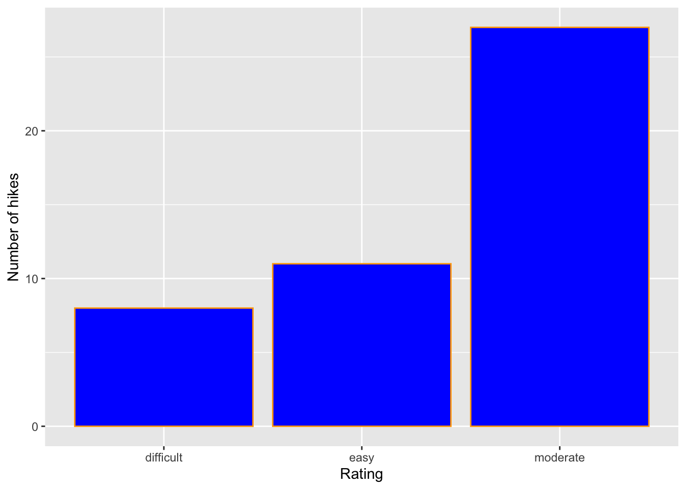
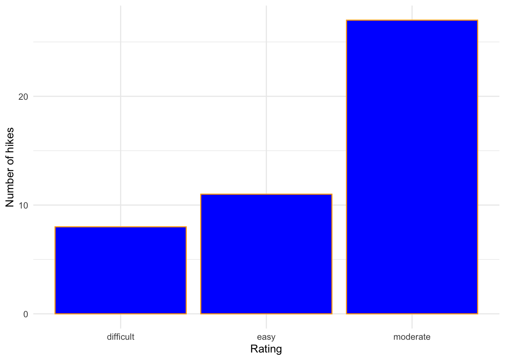
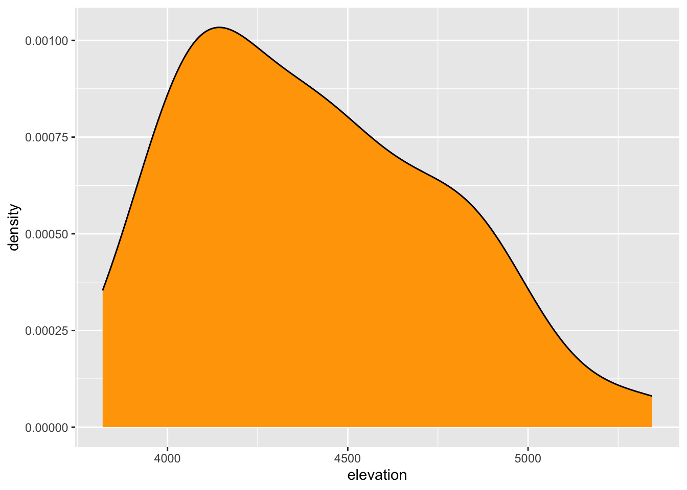
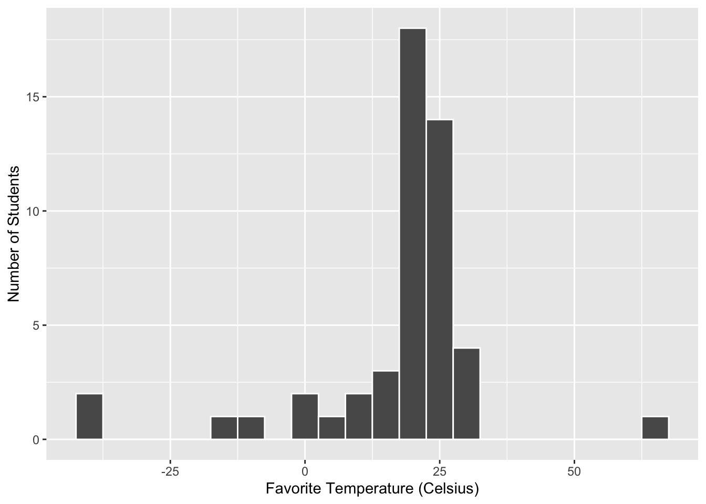
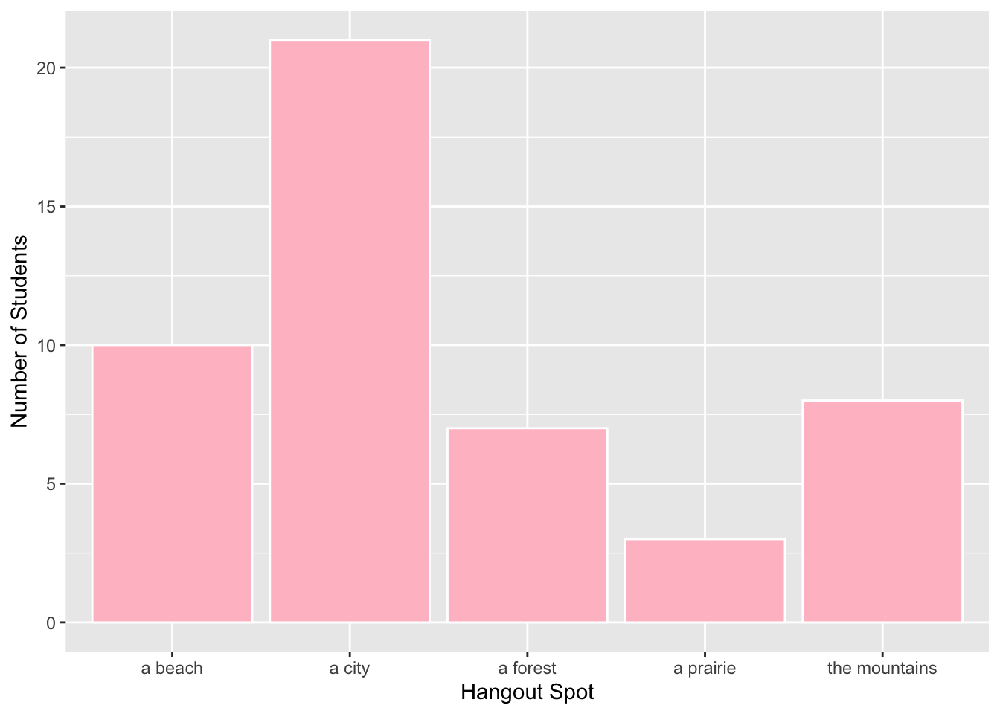

9 Univariate Viz
10 Exercise 1: Research Questions
peak elevation difficulty ascent length time rating
1 Mt. Marcy 5344 5 3166 14.8 10.0 moderate
2 Algonquin Peak 5114 5 2936 9.6 9.0 moderate
3 Mt. Haystack 4960 7 3570 17.8 12.0 difficult
4 Mt. Skylight 4926 7 4265 17.9 15.0 difficult
5 Whiteface Mtn. 4867 4 2535 10.4 8.5 easy
6 Dix Mtn. 4857 5 2800 13.2 10.0 moderate- A visualization of the rating variable should capture the order of the levels of difficulty.
- A visualization of the elevation variable should capture the scale and the range of the various elevations.
11 Exercise 2: Load Tidyverse
── Attaching core tidyverse packages ──────────────────────── tidyverse 2.0.0 ──
✔ dplyr 1.1.4 ✔ readr 2.1.5
✔ forcats 1.0.0 ✔ stringr 1.5.1
✔ ggplot2 3.5.1 ✔ tibble 3.2.1
✔ lubridate 1.9.4 ✔ tidyr 1.3.1
✔ purrr 1.0.2
── Conflicts ────────────────────────────────────────── tidyverse_conflicts() ──
✖ dplyr::filter() masks stats::filter()
✖ dplyr::lag() masks stats::lag()
ℹ Use the conflicted package (<http://conflicted.r-lib.org/>) to force all conflicts to become errors
12 Exercise 3: Bar Chart of Ratings - Part 1

13 Exercise 4: Bar Chart of Ratings - Part 2
Code

Code

Code

Code

Code

14 Exercise 5: Bar Chart Follow-Up
14.1 Part A
- The purpose of the ‘+’ is to connect the different functions together. If the pluses are taken away the bar chart doesn’t appear.
- The function is called geom_bar() because because it is creating a geometric visual based on the data–it uses geometry to fit the size of the bars to the data.
- labs() stands for labels. This function is used to label the axes of the graph.
- The color value assigns the outline color of the bar, whereas the fill value assigns the fill color of the bar. ## Part B
- We observed the difficult, easy, and moderate categories.
- The moderate category was by far the most common category.
- The Adirondacks hikes examined in this dataset are most commonly rated at a moderate difficulty. ## Part C I don’t like that the difficulty ratings aren’t in order of easy to difficult, and that the x-axis is labeled “rating” which could be more specific.
15 Exercise 6: Sad Bar Chart

This is a largely ineffective visualization for quantitative variables because there are so many bars representing unique numerical values that you can barely see them. This makes it difficult to distinguish any real pattern. This is especially true because the y-axis gives practically no information. It just tells us that at four different elevations there are two mountains with the same elevation. That information isn’t relevant. It’s difficult to tell the range of elevation, and there’s not a way to see the average elevation clearly. Outliers can be determined, but overall it’s a very counterintuitive chart to read.
16 Exercise 7: A Histogram of Elevation
16.1 Part A
- 6 hikes have an elevation between 4500 and 4700 feet
- 2 total hikes have an elevation of at least 5100 feet ## Part B The typical elevation of the hikes is around 3900 to 4500 feet. The lowest elevation is 3700 feet and the highest elevation is 5500 feet. The distribution is left-skewed, which means that hikes are most commonly around 4000 feet elevation. Hikes that are on the lower and higher ends of the elevation range are less common.
17 Exercise 8: Building Histograms: Part 1
18 Exercise 9: Building Histograms: Part 2
Code
`stat_bin()` using `bins = 30`. Pick better value with `binwidth`.
Code
`stat_bin()` using `bins = 30`. Pick better value with `binwidth`.
Code
`stat_bin()` using `bins = 30`. Pick better value with `binwidth`.
Code

Code


19 Exercise 10: Histogram Follow-Up
- The “geom_histogram()” function added the histogram layer
- The “color” is the outline color whereas the “fill” is the fill color
- Adding “color = white” improves the visualization by clearly separating the bins from each other
- “binwidth” changed the range of each bin, and subsequently, the number of bins in the histogram
- The histogram is ineffective when the bin width is too big because it lumps together data that should be separate so that they can be compared - there is no way to see a pattern when data isn’t separated in an appropriate way
- The histogram is ineffective when the bin width is too small because it obscures any representation of patterns of frequency in the data - it becomes a bar graph again
20 Exercise 11: Density Plots

I think “geom_density(color =”blue”)” will make the line blue and “geom_density(fill =”orange”)” will make the area under the line orange.
Code

It looks like the fill color was changed, but not the line color.
The density plot essentially looks like a smoother version of the histogram. It shows more precisely what the typical elevation is - around 4100 feet - and it shows a similar trend of high frequency around the most typical elevation with dropping frequency as the elevation increases.
21 Exercise 12: Density Plots vs. Histograms
The density plot provides a much more specific point of the most common value, rather than the range that a histogram provides. The density plot also clarifies the movement of the trend line more clearly than the histogram does - the values on the edges of the bins are represented much better. However, the histogram shows jumps or large differences in data points more clearly. The density plot smoothes over dramatic increases or decreases a little more. Overall, I like the density plot more for the information I can get from it and I like the histogram more as a dramatic way to present data.
22 Exercise 13: Code = Communication
Indentation in code helps to demonstrate that a line of code adds onto the larger function above it rather than being a new command separate from the previous line. Line breaks allow for easy organization and readability of code, making it so there’s no need to scroll sideways to read one line.
23 Exercise 14: Practice
Code

Code
